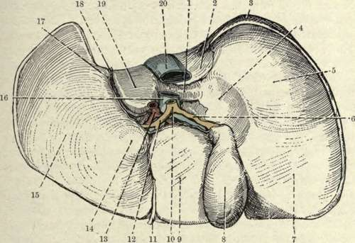

The Liver
Description
This section is from the book "Surgical Anatomy", by John A. C. MacEwen. Also available from Amazon: Surgical Anatomy.
The Liver
The Liver lies under the diaphragm, occupying the right and central portions of the cavity formed by that dome-shaped muscle to which its convex parietal surface is moulded, while its visceral surface, of irregular shape and moulded to the abdominal viscera upon which it rests, looks down, backwards, and to the left. These two surfaces meet posteriorly in a curve, while anteriorly they meet at an angle, forming the inferior margin. The liver varies much in shape and size, but its normal limits in health, as ascertained by percussion, are : Above, from a point 1 inch internal to, and ½ inch below, the right nipple, to a point 1 inch below the left nipple, the line dipping between these points to cross the sternum just above the gladiolar xiphoid junction. The right border corresponds to a curved line running downwards from the commencement of the line marking the upper limit to a point 1 inch below the tip of the tenth costal cartilage. Commencing from this point, the lower border runs to the left, corresponding with the margin of the ribs, until the ninth is reached, from the tip of the costal cartilage of which it runs in a curve, with the convexity downwards, reaching midway between the base of the ensiform and the umbilicus, till it reaches the tip of the eighth costal cartilage on the left, whence it runs outwards to meet the upper border.
The inferior margin of the liver, however, is thin, and overlaps the stomach and intestine, while the upper border is overlapped by the base of the right lung, and hence these are not always easily demarcated by percussion. Further, the lower border rises and falls with respiration, and also descends generally when the patient assumes the upright posture. It also descends when the liver is enlarged, as from tumour, and when the diaphragm is depressed, as in emphysema. Occasionally, in multiparous females with very lax abdominal walls, hepato-ptosis may occur, the liver descending to the level of the umbilicus, or even the right inguinal fossa. In some cases, especially of tight-lacing, the lower border of the liver may become prominent, and even present a projecting process, called Riedel's lobe, which may be mistaken for an abdominal tumour. On the other hand, the upper border of the liver may ascend, pushing the diaphragm and lung before it, the costo-diaphragmatic recess of the pleura becoming deepened, and the diaphragm lying in contact with the thoracic wall over a larger area. In such cases the liver may be opened through the chest wrall, pleural sac, and diaphragm (transpleural hepatotomy). The left border also varies in position, sometimes extending right across to the left lateral abdominal wall. The liver is divided into two lobes, right and left, by the falciform ligament. It has an intimate fibrous-tissue covering, which is most abundant where the serous coat is absent, and particularly so at the portal fissure, where it is known as Glissons capsule, and surrounds the vessels entering the fissure, and accompanies them into the liver substance. It is entirely covered with peritoneum, save for a space on the posterior surface of the right lobe, which corresponds to the interval between the two layers of the coronary ligament, and is attached directly to the diaphragm by areolar tissue, through which the portal circulation of the liver communicates with the systemic circulation in the diaphragm. The left margin of the uncovered area is marked below by the suprarenal capsule of the right kidney, and immediately to the left of this is the deep groove through which the vena cava passes, this groove being sometimes converted into an actual tunnel by overlapping of the uncovered area on the right, and the Spigelian lobe on the left.
The left margin of the Spigelian lobe, in turn, is grooved by the fissure of the ductus venosus, which at this part separates the right lobe from the left lobe ; and immediately to the left of it is the oesophageal groove, which leads down to the gastric impression on the visceral surface. The visceral surface of the left lobe rests upon the upper surface and lesser curvature of the stomach, which produces the gastric impression, while that of the right lobe is divided into two by the gallbladder lying antero-posteriorly. To the right of the gallbladder the visceral surface is marked by the colic impression in front and the renal impression behind, and the duodenal impression between the two and the gall-bladder. To the left of the gall-bladder, and between it and the falciform ligament, are, from before backwrards, (i) the quadratic lobe, resting upon the pylorus or the beginning of the duodenum ; (2) the portal fissure, through which the portal vein, hepatic artery, and hepatic duct enter the liver, the two layers of the lesser omentum tying attached to its borders ; (3) caudate lobe (lying between the portal fissure and vena cava), which is small, and rests on the foramen of Winslow. The inferior margin of the liver presents a notch (umbilical) at the attachment of the round ligament. It is situated 1½ inches to the right of the middle line. The notch marks the commencement of the longitudinal fissure of the liver, which divides the liver into right and left lobes, and which is composed anteriorly of the umbilical fissure, and posteriorly of the fissure of the ductus venosas. The deep umbilical fissure, lodging the round ligament, runs into the left extremity of the portal fissure, beyond which point the separation into right and left lobes is continued by the fissure of the ductus venosus, which converges above to meet the fissure of the vena cava, and lodges the fibrous remains of the ductus venosus. The round ligament is the remains of the left umbilical vein (the right one disappearing altogether at an early stage), which runs from the umbilicus to the left branch of the portal vein. Like the round ligament, the ductus venosus is a foetal channel, and carries blood from the left branch of the portal vein to the vena cava direct, without going into the liver. It becomes obliterated at birth, and degenerates into a fibrous cord. Thus, round ligament (or umbilical vein) and ductus venosus in the foetus are practically continuous structures, blood passing direct from the placenta along the umbilical vein through the ductus venosus to the inferior vena cava, and so to the heart direct.
Fig. 28.-The Inferior Surface of the Liver. (From Buchanan's "Anatomy.")
1. | Lobus caudatus. | 11. | Round ligament. |
2. | Impressio suprarenale. | 12. | Hepatic duct. |
3. | Uncovered area of right lobe. | 13. | Hepatic artery. |
4. | Impressio duodenalis. . | 14. | Tuber omentale. |
S- | Impressio renalis. | 15. | Impressio gastric on left lobe. |
6. | Cystic duct. | 16. | Vena portas. |
7. | Impressio colica. | 17. | Oesophageal groove. |
8. | Gall-bladder. | 18. | Venosal fissure. |
Sl- | Lobus quadratus. | 19. | Lobus Spigelii. |
10. | Ductus communis choledochus. | 20. | Inferior vena cava. |
The fossa lodging the gall-bladder is usually devoid of peritoneum, the gall-bladder lying, as a rule, directly in contact with the liver (sometimes, however, it is suspended by a short mesentery), and situated at a point where the right Poupart line crosses the lower margin of the ribs (between rib margin and outer border of rectus). With the exception of the uncovered area, the gall-bladder fossa just mentioned, and a small area between the layers of the falciform ligament, the whole organ is invested with peritoneum, all derived from the great sac, except that covering the caudate and Spigelian lobes.
The liver is maintained in position by its adhesion to the under-surface of the diaphragm at the uncovered area ; by the two coronary ligaments which are peritoneal processes reflected from its margin on to the diaphragm ; the left lateral ligament running from the left lobe to the diaphragm, and the falciform ligament (both peritoneal) ; its attachments to the vena cava ; and the upward pressure of other abdominal organs. The falciform ligament consists of a crescentic double layer of peritoneum, whose convex border is attached to the under surface of the diaphragm and anterior abdominal wall, about 1 inch to the right of the middle line ; while the concave border, free, and containing the round ligament, extends from close to the umbilicus to the umbilical notch of the liver. The gastro-hepatic omentum, extending from the liver to the lesser curvature of the stomach, consists of two folds of peritoneum- the anterior, derived from the greater sac ; and the posterior, from the lesser sac-between which, at its right extremity, are the bile-duct, hepatic artery, and portal vein, with nerves and lymphatics. Notwithstanding its attachments, however, the liver has occasionally descended to the level of the umbilicus, or even into the iliac fossa (ptosis of the liver), the organ turning in its descent, so that its diaphragmatic surface becomes anterior.
Continue to: